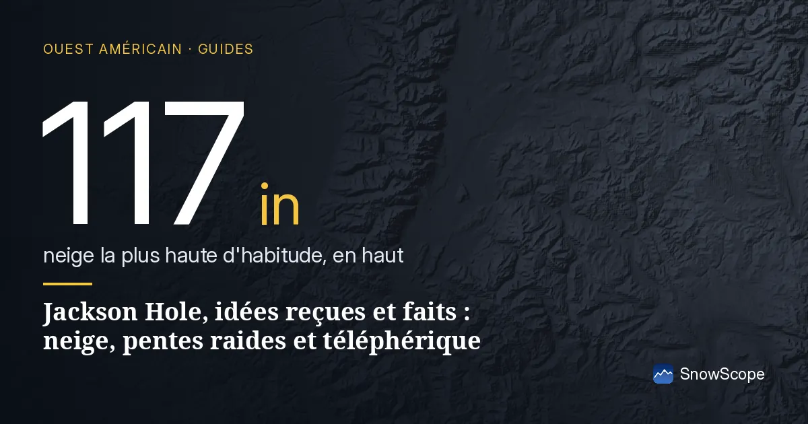

Jackson Hole, idées reçues et faits : neige, pentes raides et téléphérique
Jackson Hole Mountain Resort a une réputation en partie mythique, en partie fondée. Nous avons vérifié six affirmations courantes contre le domaine skiable publié et 46 hivers d'historique de profondeur de neige pour séparer le vrai du faux.
Consultez les prévisions neige en temps réel pour Jackson Hole Mountain Resort sur l'application SnowScopeHauteurs de neige, alertes poudreuse et carte 3D, gratuitement.

Mythe : Jackson Hole est réservée aux skieurs experts
Fait : le domaine skiable est effectivement défini par des pentes raides. Avec un dénivelé de 1 240 m (4 100 ft) et 78 km (49 miles) de pistes, la montagne est célèbre pour son niveau de difficulté. Mais les experts ne sont pas les seuls à pouvoir y skier.
Les pentes inférieures près de la base à 1 929 m (6 329 ft) offrent des pistes plus douces adaptées aux débutants et aux skieurs intermédiaires prudents. À mi-montagne vers 2 549 m (8 363 ft), l'offre est plus variée. L'avis honnête : les intermédiaires trouveront de bonnes conditions ici, mais ils doivent s'attendre à planifier leurs parcours avec soin et éviter de compter sur une journée entière de pistes faciles.
Mythe : la neige disparaît avant le printemps
Fait : la haute montagne conserve la neige bien plus longtemps que beaucoup ne l'imaginent. Le pic de la saison se situe généralement en avril aux plus hautes altitudes près de 3 169 m (10 397 ft), avec une profondeur médiane de 267 cm (105 in). À mi-montagne vers 2 549 m (8 363 ft), avril conserve encore 169 cm (67 in) une année normale.
Les pentes inférieures près de 1 929 m (6 329 ft) sont différentes : elles culminent à seulement 116 cm (46 in) et fondent en premier. Mais si vous cherchez l'altitude, vous pouvez skier jusqu'à fin mai au sommet. L'historique des hivers passés montre que la première neige arrive généralement au sommet au début octobre et persiste jusqu'à fin juin.
Mythe : le changement climatique a dénudé la montagne
Fait : la neige à mi-montagne est restée stable sur les 46 hivers d'historique. La profondeur typique au pic des 15 premiers hivers était de 203 cm (80 in) ; dans les 15 derniers hivers, elle est de 205 cm (81 in). Le sommet a légèrement baissé, de 297 cm (117 in) à 285 cm (112 in), mais les deux restent solides.
Ce qui a changé, c'est le nombre de jours avec neige au sol. À mi-montagne, cela est passé de 250 jours au début à 239 jours récemment. L'hiver dernier, 2025-26, a culminé à 162 cm (64 in) à mi-montagne, au-dessous de la normale. Dans 9 hivers sur 10, mi-montagne conserve au moins 50 cm (20 in) pendant 22 semaines de la saison.
Mythe : le couloir de Corbet est la raison principale de venir
Fait : le couloir de Corbet est la ligne la plus célèbre et la plus difficile de la montagne, et la plupart des visiteurs ne la voient que de loin. La raison la plus importante de venir est la variété de terrain qui conserve la neige après les tempêtes à différentes altitudes.
Le téléphérique de 100 passagers au sommet, qui a ouvert le 20 décembre 2008, amène beaucoup de skieurs aux hauts sommets en un seul trajet. De là, une gamme de pentes à différents angles vous permet de trouver des conditions de ski adaptées à la neige et à la météo du jour.
Mythe : Teton Village est dans la ville de Jackson
Fait : Teton Village se situe à environ 19 km (12 miles) au nord-ouest de la ville de Jackson. L'aéroport de Jackson Hole se trouve à environ 18 km (11 miles) au nord-est du village. Séjourner à Teton Village vous met au pied des remontées ; séjourner à Jackson offre plus de choix de restaurants et d'hébergement, avec un trajet en voiture ou en bus chaque matin.
Mythe : la barrière de l'arrière-pays signifie que le terrain est sûr
Fait : le domaine skiable dispose d'environ 1 215 acres de terrain en arrière-pays balisé au-delà de ses limites. Une barrière marque le bord du terrain contrôlé. La franchir signifie entrer en terrain d'avalanche.
Avant de partir, consultez le bulletin quotidien du Bridger-Teton Avalanche Center. Portez un détecteur de victimes d'avalanche, une sonde et une pelle. Voyagez avec des compagnons qui connaissent le terrain. L'accès à l'arrière-pays est un privilège ; le bulletin d'avalanche est votre guide.
Conseils aux skieurs
- Les skieurs intermédiaires peuvent skier à Jackson Hole : planifiez vos parcours autour des pistes plus douces en bas et à mi-montagne.
- Pour le manteau neigeux le plus profond, visez février à avril ; les hauts sommets en conservent le plus.
- Séjournez à Teton Village si vous voulez marcher jusqu'aux remontées ; Jackson offre plus de choix si vous allez conduire.
- Décembre accumule la neige lentement à toutes les altitudes ; janvier à mars sont les mois les plus fiables.
- Ne franchissez jamais une barrière d'arrière-pays sans vérifier le bulletin du Bridger-Teton Avalanche Center et sans porter un équipement de sauvetage.
À propos de ces chiffres
Les hauteurs de neige des stations sont la neige la plus épaisse sur le haut du domaine à la date indiquée ; ce sont des estimations pour une zone, pas une mesure en un point. Les prévisions peuvent changer. Consultez toujours le bulletin d'avalanche officiel avant le hors-piste.
Bulletins d'avalanche officiels: Bridger-Teton Avalanche Center
Citer ce bulletin
Pour la recherche, l'enseignement ou la presse : chiffres et graphiques réutilisables librement sous CC BY 4.0 avec cette citation.
SnowScope (2026), Jackson Hole, idées reçues et faits : neige, pentes raides et téléphérique, https://snowscope.app/blog/fr/2026/11/jackson-hole-ski-myths-and-facts.html, consulté le 2026-11-09
SnowScope (Atlas Labs). (2026, November 9). Jackson Hole, idées reçues et faits : neige, pentes raides et téléphérique. SnowScope snow reports. https://snowscope.app/blog/fr/2026/11/jackson-hole-ski-myths-and-facts.html
BibTeX
@misc{snowscope2026jacksonholeskimythsandfa,
author = {{SnowScope (Atlas Labs)}},
title = {Jackson Hole, idées reçues et faits : neige, pentes raides et téléphérique},
year = {2026},
month = nov,
howpublished = {\url{https://snowscope.app/blog/fr/2026/11/jackson-hole-ski-myths-and-facts.html}},
note = {Published 2026-11-09 20:02 UTC; accessed 2026-11-09}
}· CC BY 4.0 · Méthodes, données et outils →
Suivre Jackson Hole Mountain Resort
Gratuit : un message quand la neige arrive, et la météo chaque matin.